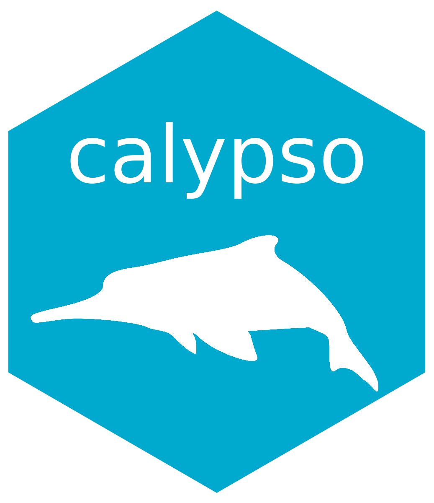

Generate a calibration table
Source:R/atlantis_methods-calibrate.R
generate_calibration_table.RdS7 generic for building the list of parameters to calibrate from a YAML specification file.
Value
A data frame with one row per value to calibrate and columns
name, cur_value, min, max, position, transf and source_file.
Details
The YAML file is a list of entries, one per parameter, each expanded into one row per value to calibrate. The following fields are recognised:
name(required): the parameter name, as listed inlist_atlantis_parameters(). The name may contain a placeholder such as<GRP>(e.g.mum_<GRP>); the placeholder is then expanded over the values of an extra field of the same name without angle brackets (seeGRPbelow). Entries without a placeholder (e.g.rec_m) yield the parameter as is.GRP(required whennamecontains<GRP>): one or several group codes. Every code must belong to a group that is turned on in the group file, which therefore has to be loaded inx. The group is also used to compute the dimension of the parameter, e.g. the number of cohorts for aper_cohortparameter.position(optional): integer index, or vector of indices, of the values to calibrate for array parameters (e.g. one value per cohort or per box). Defaults to all positions. Positions are validated against the dimension of the parameter when it can be computed from the loaded files (scalar,per_group,per_cohortandper_boxparameters; the latter requires the geometry file). For other dimensions a warning is emitted and a single position is assumed.transf(optional): transformation mapping the calibration scale to the scale used in the parameter file, one of"identity"(default),"pow10","pow2"or"exp", seetransform_parameter_value(). A log scale (pow10orexp) is recommended for rate parameters spanning several orders of magnitude.min,max(optional): lower and upper bounds of the search, expressed on the calibration scale. Withtransf: pow10,min: -3thus means a lower bound of0.001in the parameter file. Default to-InfandInf.is_factor(optional, defaultfalse): whentrue,minandmaxare interpreted relative to the current value of the parameter rather than as absolute bounds. The bounds becomecur_value * transf(min)andcur_value * transf(max)on the file scale, mapped back to the calibration scale. For instance, withtransf: pow10,min: -1andmax: 1restrict the search to one order of magnitude on each side of the current value, and withtransf: identity,min: 0.5andmax: 1.5to plus or minus 50%. This requires the current value to be available, i.e. the parameter file the parameter belongs to must be loaded inx.
The current value of every parameter is read from the corresponding
parameter file loaded in x and reported in the cur_value column. When
the file is not loaded, a warning is emitted and cur_value is NA
(unless is_factor is true, in which case an error is thrown).
A minimal specification looks like:
Examples
if (FALSE) { # \dontrun{
mod <- new_atlantis() |>
atlantis_load_files(c(
atlantis_examples("inputs", "tiny.bgm"),
atlantis_examples("inputs", "tiny_biol.prm"),
atlantis_examples("inputs", "tiny_groups.csv")
))
mod |>
generate_calibration_table(
atlantis_examples("calibrate", "mum.yaml")
)
} # }